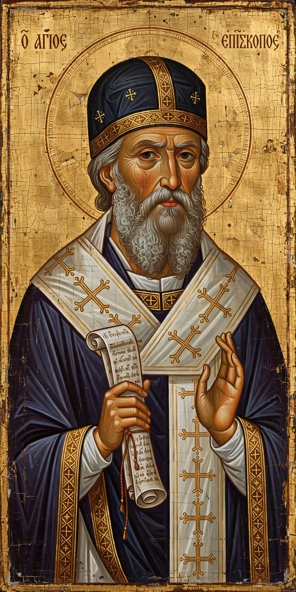

| Saint Athanasius of Alexandria | |
|---|---|
| Born | c. 296–298, Alexandria, Egypt |
| Died | 2 May 373, Alexandria |
| Office | Patriarch (Pope) of Alexandria, 328–373 |
| Known for | Defence of Nicene orthodoxy against Arianism; On the Incarnation; Festal Letter 39 listing the New Testament canon |
| Feast | 2 May (West); 18 January (East) |

Athanasius of Alexandria (c. 296–298 – 2 May 373), also called Athanasius the Great and Athanasius the Confessor, was the 20th patriarch (pope) of Alexandria. He is remembered chiefly for his leading role in the conflict with Arianism and for his defence of the doctrine of the Trinity as defined at the First Council of Nicaea — a stand summed up in the phrase Athanasius contra mundum ("Athanasius against the world").
Educated in Alexandria, Athanasius served as deacon and secretary to Patriarch Alexander and accompanied him to Nicaea in 325, where the council condemned Arius and affirmed that the Son is homoousios ("of one substance") with the Father. Succeeding Alexander in 328, Athanasius spent much of his 45-year episcopate in exile — five banishments totalling some 17 years under the emperors Constantine, Constantius II, Julian and Valens — sheltering at times with the desert monks of Egypt, whose lives he celebrated in his bestselling Life of Antony, a foundational text of Christian monasticism.
His early treatise On the Incarnation remains a classic of Christology, containing the famous dictum that the Son of God "was made man, that we men might be made gods." His 39th Festal Letter (367) contains the earliest surviving list of exactly the 27 books of the New Testament canon. Athanasius is venerated as a saint and Doctor of the Church in the Roman Catholic tradition and as a great hierarch in Eastern Orthodoxy and the Coptic Church. The Athanasian Creed is named for him, though it was composed later.